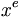

De: La Frikipedia, la enciclopedia extremadamente seria.
De: La Frikipedia, la enciclopedia extremadamente seria. De: La Frikipedia, la enciclopedia extremadamente seria.
| De la serie ciudades del mundo: | |||||
| Valladolí | |||||
| |||||
| Topónimo oficial | Fachadolid | ||||
| País | La España de Franco | ||||
| Código postal |  | ||||
| Superficie | Rojigualda | ||||
| Altitud | dos metros | ||||
| Distancia | 0, es el centro | ||||
| Fundación | Hace mucho | ||||
| Población | muchos hab. y pico, 2005 | ||||
| Gentilicio | Fachisoletano, unos pocos Jebisoletanos en menor medida | ||||
| Alcalde | Javi leoncho de la priba (PP) | ||||
| | |||||
Externamente también es conocida como Pucela
Nadie sabe cuándo ni cómo fue fundada. Nadie sabe qué co-ño quiere decir Valladolid. Nadie sabe qué co-ño quiere decir Pucela. ¡Ni siquiera los pucelanos sabemos qué co-ño hacemos aquí!
Parece ser que Castilla, que es una cosa como Valladolid pero más grande y partida en cachitos, fue fundada por una pelea con León que todavia dura. Y que eso es lo que sustenta el odio entre las dos ciudades. Un día hubo un intento de acercamiento entre ambas pero parece ser que hubo temblores de tierra, que hicieron resurgir el Moncayo mismo (volcan Soriano). Así que les dio por hacer una Comunidad Autónoma que las aglutinase a las dos y a cascarla. Eso sí, eligieron a Pucela como capital.
Los rojos aseguran que su nombre real es Fachadolid. Los fachas, que es una ciudad normal. Total, si sólo hay diez pollos por calle. También es cierto que la tradición manda que los alcaldes cambien cada 16 años. Por lo que después de 16 años de alcalde sociata, ahora vamos a por 16 años de alcalde facha( un títere del IV Reich Galaico), y así la historia inerminable.
Valladolid no sólo destaca por su población, sino también por ser la cuna de grandes culturas como el Botellismo y el Onanismo (ya lo decía el popular refrán: "ancha es Castilla y estrechas son las castellanas").
Desde hace 9.454.25 años y dos días, sus habitantes están decididos a llevar a cabo la conquista del mundo y proclamar la capital del imperio intergaláctico Castellano. Toda empresa con más de dos empleados debe construir un rascacielos de 951 m de altura (para que se vea bien desde la impuras e históricamente inexistintes provincias-satélite) en el centro neurálgico de la tecnología mundial.
También hay una particularidad muy arraigada en la capital, que es la capacidad de búsqueda de aparcamiento en lugares tan insospechados como parques, sobre aceras,pasos de cebra y cualquier curva de la ciudad que impida la visibilidad(capàcidad compartida con los habitantes de Vigo). Distinguiéndose zonas de gran habitualidad estas prácticas como Rondilla o Delicias la cual los foráneos latinoamericanos también tenian estas prácticas con su carros en sus paises, pero ahora con coches ya no gastan en zanahorias para el burro. Todo esto puede desaparecer con la politica del Ayuntamiento en la asfaltación de las calles, pero la práctica todavia se conserva en los eventos deportivos del Zorrilla y mercadillos varios.
Ademas fue la capital de el imperio en el que jamas se ponia el sol, fue donde nació felipe segundo (algo asi como Bush, Puttin y el presidente de china juntos, pero para la época), que tuvo que salir de su palacio en el que nació por una ventana situada en una esquina precisamente para que no le tildasen de ningún frente político
Valladolid es, sin lugar a dudas, la ciudad menos acogedora de España, ya que se considera castellana...no española, cuando es Castellana es la mar de maja. No en vano, estamos ante una localidad cuya belleza brilla por su ausencia ya que los especuladores agresivos tiraron toda la ciudad y la construyeron fea de cojones.Una especie única en el mundo, por suerte y que se ha dado en llamar "l@s pucelan@s".
Los pucelan@s, en masculino, son por regla general manipuladores y fríos. Tanto que en el mismo momento en el que alguien cuenta un chiste sin su consentimiento, lo denuncian por desórdenes públicos. Su educación es tal que cuando los inviernos de la zona eran glaciales, los hospitales de la ciudad se llenaban de hombres que se habían partido un hueso por culpa de los "lapos" congelados con los que los vallisoletanos adornaban sus calles para que estuviesen más bonitas.
Y es que el gusto por cuidar de su patrimonio es otra de sus características. De hecho, el Ayuntamiento no para de dar las gracias por la cantidad de vecinos que se preocupan de limpiar con sus meadas la mierda de las fachadas de las iglesias del siglo XV. Pero eso sí, si no les dejan hacerlo, empezarán a gritar "alcalde fascista". Y es que, total, ¿a quién le puede importar un monumento si tienes ganas de mear y de potar?
Pero si hay algo por lo que se distinguen los pucelanos es por su sencillez. Da igual que seas un licenciado en Física Nuclear y que hables con un limpiador de retretes. Si este último es de Valladolid, significa por ello que está diez o quince niveles por encima de ti y que debes besar cada adoquín que pisa, que para algo eres una más en la cadena compañero.
Ah y por supuesto, si un vallisoletano no se ha reído de tu cultura... es el momento de tus estudios porque hablas como ellos. Sí hombre, como la gente culta, que emplea frases como menester o quehaceres.
Un caso aparte son las fachisoletanas. Guapas, feas, altas o bajas, las féminas autóctonas de esta ciudad, salvo Patricia Conde, se caracterizan por el llamado "Gdlg", uséase, "Gen de la gili-pollez". Si ya de por sí ya dice el dicho que ancha es Castilla y estrechas las castellanas, las vallisoletanas elevan ese supuesto hasta el límite de lo grotesco. El hecho de que una hembra entre en el campo visual de un hombre el permiso de ésta, conlleva el tenerle que dirigir por escrito una disculpa formal firmada ante notario, o enfrentarse a un juicio por acoso sexual. No en vano, el hecho de estar físicamente a 500 metros de una, significa para ellas que estás enamorado de una... y estar a 200, que la quieres violar...
Tampoco podemos olvidarnos de lo poco aficionadas que son a poner delante de alguien una sonrisa de oreja a oreja y, una vez que se ha ido, despellejarlo por la espalda, y de lo poco "repipis" que son. Ah y nunca se te olvide una cosa, la culpa siempre es de los demás cuando hacen algo mal, nunca de ellas. Un hecho que ha convertido a Valladolid en la cuna de todos los recordmans mundiales en pajas hechas a la hora. ¿Por qué será?
En fin, como diria un arquitecto, lugar geométrico de los puntos del plano donde simpatía y cordialidad están en ausencia por definición, donde el conflicto rojo contra facha sigue latente y se cometen decenas de asesinatos diarios.
Su sistema educativo se rige por dos grandes frases de un poeta de la tierra: "Ama a tu dios y a tu patria más que a ti mismo; lanzando piedras a los rojos, a ser posible en los ojos." El horario escolar de los estudiantes consta de dos únicas asignaturas: Religión e Historia de España, las cuales comienzan con un rezo en religión, y con la representación vocal del "Cara al Sol" al inicio de las clases. Éste es el punto más importante de la evaluación y es obligatorio para obtener el aprobado.
Cierto es que cuenta con una de las universidades de brugeria (o medicina como ahora llaman) donde mas nivel se exige, y mas investigaciones se realizan, utilizando por supuesto como conegillos de indias al 15% del que se habla mas adelante.
La mala leche de los pucelanos se plasma tal cual en su famosisima E.T.S. de Ingenieros industriales (ya solo es una sede, desde la implantacion del plan bolonia) Donde los profesores se quedan comiendo jamón y queso en sus despachos, o como ellos dicen INVESTIGANDO SOBRE COMO FUNCIONA EL PALADAR HUMANO, y luego ponen examenes que ni ellos mismos saben corregir (se dice que en su sotano existe una bola enorme, que es la que dice la nota, bola que porsupuesto los profesores no manejan, ellos se van de congresos)
LA verdad eske el fondo de escribir todo esto...simplemente es pura envidia que siento hacia Valladolid y sus habitantes,ya q en realidad,yo tngo que confesar que soy de Palencia,un puto pueblacho que lo unico que tiene es el carrefour y.... y no se me ocurre nada mas :S.Somos como borregos que le vamos hacer :), aunque es cierto que en nuestro poblacho las mozas son menos estrechas y recatadas desenvocando en una mejor vida sexual cosa que los pucelanos solo practican pagando o espiando a su hermana en el baño.
Desde un punto de vista histórico, los habitantes de Valladolid, odian a los de Burgos y a los de Salamanca(ciudades que le disputan la representación parlamentaria nate las Cortes del IV Reich Galaico). También odian a los de Palencia, aunke son unos dignos rivales sin duda nosotros somos superiores pero nuestra lucha en constantet ampoko vale la pena dar mucha importancia al resto pero weno. Aparte el enfrentamiento con palencia y su temido ejército de mala razas.Los fachisoletanos suelen utilizar partidos de balonmano(ademar-fachadolid) para demostrar que todas estas disputas se deben a la adoracion Pucelana de un mismo Dios: Las Kepchup y su chuloputas, el dios Lugh. Este odio se remonta al año 782a.C cuando un leonés robó a un vallisoletano una patata cocida que iba a merendar. Este fué el inicio de las llamadas guerra púnicas en las que Pucela y Francesco Franco, que les hizo un favor creando una comunidad autónoma, asi por que si, y haciendolos capital, cosa que nunca llegaran a asumir debido a su falta de cerebro.
Sus principales fiestas son:
Además de las fiestas mayores, en Valladolid, existen las fiestas de las peñas, el vino, la comida y el botellón. El origen de estas fiestas lo encontramos hacia el 1542d.C, año en el cual los habitantes de Valladolid decidieron poner en las calles una serie de casetas donde se vendieran truños envasados, a precios muy caros.
Parece que la idea cuajó y, hoy en día, se sigue manteniendo la tradición de servir los truños típicos, con la ligera excepción de que son aún mas caros y las condiciones higiénicas serian las propias del aseo personal del ano de un chimpancé. (Misteriosamente, el efecto combinado de la porquería y el alcohol, hacen que los truños que se sirven sean un aunténtico manjar).
En Valladolid abunda también una importante cultura del botellón, sobre todo en las zonas libres, normalmente ausentes de policía ya que como en los antiguos suburbios jamaicanos, los vallisoletanos hicieron de Rude boys y echaron a los maderos , que son la ribera del espléndido, puro y cristalino río Pisuerga y la gran montaña, conocida como el Monasterio (sorprende el nombre, dado que antes era un manicomio). Se dice que en estos lugares se reúne fauna y flora de la juventud vallisoletana para realizar el antiguo y milenario arte del botellón, que en Valladolid, está muy arraigado.
También conocido como gente de izquierdas un paradigmático grupo de rojos hijos de puta sindicalistas anarco insurreccionalistas socialistas de fuerza nueva neonaziz republicanos de carriyo y monseñor rouco varela.
En ese 15% no-facha antes descrito, habitan revolucionarios los cuales se juegan a diario la vida en esta ciudad tan dificil apartando a pijos y fachondigos varios.
Hubieran deseado nacer en otro lugar más acorde pero están enamorados de la tierra y les encantan los retos suicidas. Su vida se facilitaria si se pudiera cambiar de alcalde, pero el asesinato está penado por ley.
HAZTE ALUMNO DE PATRICIA CONDE EN SU BRUTO http://patricia-conde.elbruto.es
Autor(es):